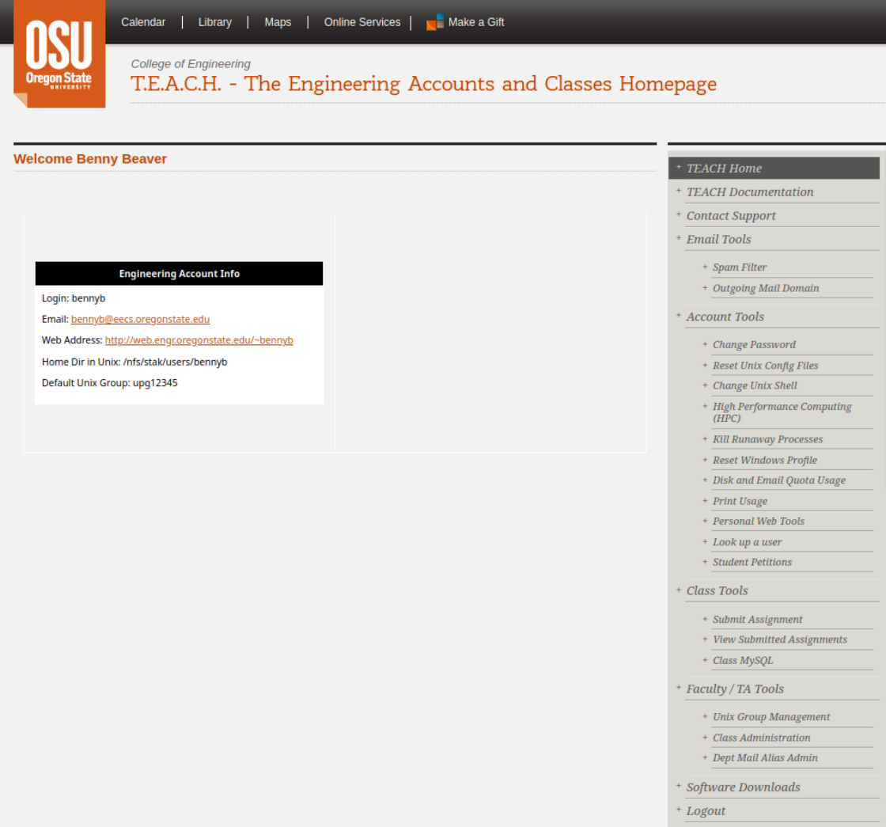
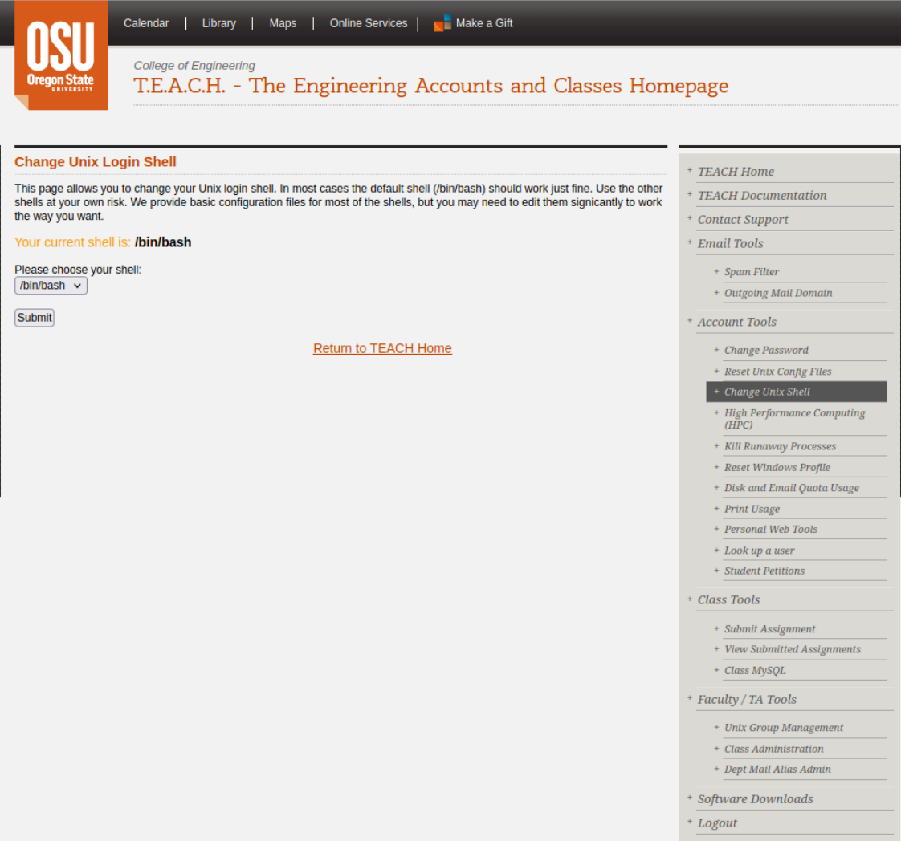
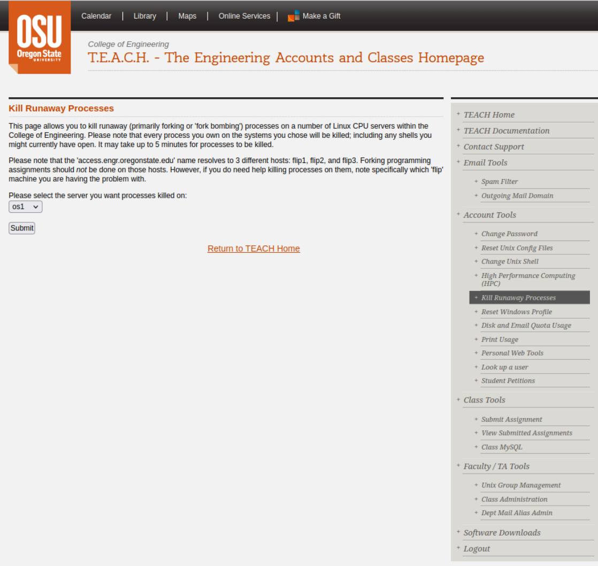
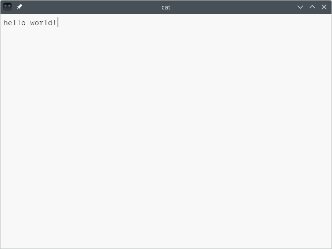
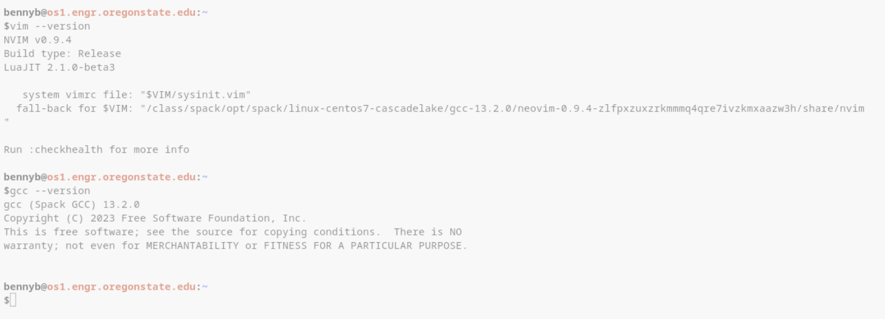

OS1 Server Setup Guide
This course relies heavily on access to a linux server called os1 that is hosted on the OSU network. With the types of programming we will be doing, students can accidentally spawn infinite processes, consume all memory on the system, create billions of files, and so on–the types of things that can cause a server to crash. os1 was set aside specifically for students in this class as a “systems programming playground” of sorts, and IT really doesn’t want to see anyone working on this class on any of the school servers. They also set up more restrictive limits on the number of process you can spawn, the amount of memory you can use, and so on, to try and keep things from getting too out of control.
Additionally, os1 contains a lot of custom software and configurations to enable you to effectively and comfortably learn to do software development in the command-line interface, via remote SSH to a headless development server–an important fundamental skill in software development. If you need some extra motivation: anecdotally, I have heard from a friend who does a lot of hiring of new grads at a major regional employer that more than 90% of their interviewees fail first-round interviews specifically due to a lack of basic proficiency with the command-line interface!
This guide will walk you through the process of setting up your local system, enabling the appropriate account privileges at OSU, connecting to the server, and setting up your remote environment.
OSU Account Privileges
Before we get started, the os1 server is hosted by the college of engineering, which requires students to explicitly opt-in to access ENGR servers. This requires activating your account in an online account management system called The Engineering Accounts and Classes Homepage (T.E.A.C.H.). T.E.A.C.H. is a system which predates the introduction of a lot of the online classroom tools we are familiar with today, and once was the tool that students used to submit assignments, and so on. Nowadays, it has been connected to the school’s ONID login system, so that you already have an account with the same username and password–but you need to activate it.
Account Activation
Visit the Acceptable Use Policy page and click the “I Agree” button at the bottom. From here, you will be asked to log-in through ONID. Once you have done so, your account should be activated with the same username and password that you use to login to ONID. You can now log-in to T.E.A.C.H. using your ONID credentials. Once logged in, you will be greeted with the T.E.A.C.H. homepage:
{kind=link}
Login Shell Selection
Before leaving this page, navigate to the “Change Unix Shell” page in the navigation menu, and ensure that your current shell is listed as /bin/bash. If not, select it from the dropdown menu and hit submit; after changing the shell, wait about 15 minutes before continuing with the setup guide so that the update can propagate to the school servers. This will change which shell program is spawned when you login to a server–called your login shell. The shell is a program that provides the command-line interface, itself.
{kind=link}
Killing Runaway Processes
While you are here, make note of another page in the navigation sidebar titled “Kill Runaway Processes”. If you are ever logged into a school server, or unable to log in, and you see error messages to the effect of,
-bash: fork: retry: Resource temporarily unavailable
-bash: fork: retry: No child processes
-bash: fork: retry: Resource temporarily unavailable
-bash: fork: retry: Resource temporarily unavailable
-bash: fork: retry: No child processes
It means that you have reached your process limit on the server and are unable to spawn a new process, whether it be a new shell process to log in, or run a command while already logged in. This is often the result of a run-away process which is forking (creating new child processes) in an infinite loop, or perhaps creating child processes which each spawn additional child processes in an infinite recursion. To resolve this, you can log into T.E.A.C.H and use the “Kill Runaway Processes” tool to kill all of your processes on that server,
{kind=link}
Local Software Configuration
In order to connect to the remote server, you need a couple of tools,
A graphical application called a terminal emulator that bridges the GUI-TUI divide so that you can run text-only applications.
A minimum set of command-line utilities to enable connection over a remote network using the Secure Shell (SSH) protocol.
A terminal emulator is a graphical application that emulates a physical teletype machine (a terminal). Essentially, it bridges the gap between GUI (Graphical User Interface) and TUI (Text User Interface), allowing you to use TUI applications, like the shell command-line. TUI applications run “inside” (really in parallel to) the terminal emulator, and send their output to it as text and control codes. The terminal emulator is responsible for converting this into a drawing on the screen (text). It also captures user input (keyboard and mouse) and transforms it into a stream of text and control codes that TUI applications can read from.
{kind=link}
There are many terminal emulators available; however, in the last few years, a particular terminal emulator called kitty has essentially come to dominate the previously stagnant terminal emulator ecosystem and is now the de facto standard terminal emulator used by practically everyone–to the point where many TUI applications rely on features that only kitty has. Unfortunately, kitty is only available on POSIX systems (MacOS, Linux, BSD, etc.) and is not available as a native application on Windows, and there are no Windows-native terminal emulators that are standards compliant enough to work well.
Windows
In order to use kitty on a Windows-only machine, you will need to find a way to run a full graphical Linux desktop environment. You may do this either by installing Linux as a second operating system (dual-boot), or by virtualizing Linux inside of Windows. In general, virtualization is an easier route that works well enough for most students. However, it does not work on all equipment (especially older computers, and some low-end laptops), and sometimes has issues that lead to students choosing to dual boot instead.
Virtualization
There are essentially three major virtualization options on Windows: VirtualBox, VMware, and WSL. Of the three, WSL (Windows Subsystem for Linux) is the easiest to set up, because it is a Microsoft product that is directly integrated into Windows. On the other hand, it also has the most bugs and some caveats. Between VirtualBox and VMware, VMware is generally considered superior in terms of performance and features. Choose one of the following:
WSL
WSL is a built-in Linux virtualization tool bundled with Windows. It allows users to quickly and easily install and use various Linux distributions. Most of these are accessed through the command-line only, inside of Windows Terminal. That’s not what we want–we want a graphical desktop, so we can run kitty. Thankfully, there is a specific WSL package called Win-Kex which is a turn-key virtual Linux desktop environment for running Linux-native graphical applications like kitty.
Warning
Be aware that there are several known issues with WSL. For example, the AnyConnect VPN and WSL are incompatible with each other. Using both at the same time will cause one to not be able to connect (WSL will have no internet access, or the VPN will not work). Additionally, some students experience instability (random crashes, etc.) and graphical problems (kitty is just a black screen, etc.). If you experience these problems, you may need to try one of the other commercial virtualization solutions, or dual-boot.
In order to install Win-Kex, follow the instructions here: Win-Kex. Win-Kex has three different modes of operation, and not all of them will work with all combinations of hardware and software.
- Window Mode
In Window Mode, Win-Kex spawns a Linux desktop environment, and attaches it to a VNC (remote desktop) server, which advertises on the shared Windows-Linux network stack. Then it spawns a VNC viewer application running in Windows, which connects to the VNC server running in Linux. This is the most basic desktop environment experience which works on the most systems.
- Seamless Mode
In Seamless Mode, Win-Kex uses a Windows-native port of the Unix X/windows display server, called VcXsrv, to allow applications to run directly as individual windows in the Windows desktop. This mode relies on VcXsrv functionality, which is incomplete. It may work on most systems, but have display issues on others. Additionally, certain applications may not be able to run in Seamless Mode due to its limited compatibility.
- Enhanced Session Mode
In Enhanced Session Mode, Win-Kex hosts a Linux desktop environment on a server using the Windows Remote Desktop Protocol (RDP), and spawns a RDP viewer in Windows to attach to the server. This is a lot like VNC mode, but with better graphics and support for things like copying and pasting into the environment. However, it is dependent on the Linux-port of RDP server functionality, which, like VcXsrv may have compatibility issues with certain software.
I would suggest trying Seamless mode first, and then falling back to Enhanced Session Mode, and finally the basic Window Mode.
Once you have Win-Kex installed, you can proceed with the directions for MacOS, Linux, BSD, etc.
VMware/VirtualBox
Both VMware and VirtualBox are generic virtual machine software, and work in basically the same way. If you have experience with one, use that, otherwise try VMware first since it’s usually better.
VMware is available here, and VirtualBox is available here. Once installed, the setup process is essentially the same–create a new virtual machine in VMware/VirtualBox, find a Linux distribution .iso, and boot the virtual machine from it in order to start the installation process. I would recommend using ubuntu if it is your first time using Linux, since it is designed specifically for new users coming from Windows. You can install any of the versions available on the downloads page. Once you go through the installation process, you can continue to the directions for MacOS, Linux, BSD, etc..
Note
Broadcom recently acquired VMware, and any previous guides may no longer apply. The availability of VMware may change at any moment. A student supplied the following instructions that worked for them:
Make a free account with Broadcom
Visit this site https://support.broadcom.com/group/ecx/productdetails?productName=VMware%20Workstation%20Pro or,
Top right side select VMware Cloud Foundation
Menu left side click on All Products and search VMware Workstation Pro
Page 5 and click Product Details on VMware Workstation Pro
Menu left side click My Downloads you will have VMware Cloud Foundation download list.
Find VMware Workstation Pro and select For Personal use
Put your address detail and tick agree.
Click on HTTP Download
Dual Boot
Danger
There is always a possibility of irrecoverable data loss when installing an operating system on an existing system. For example, during the setup process you may need to select partitions to format and install Linux on. If you select your Windows partition by accident, you will immediately lose all of that data. It is always recommended that you back up data before attempting to set up dual-boot, and, as always–be careful!
In order to dual-boot, you will need an empty partition to install Linux on. The most convenient way to do this is to just buy a cheap hard drive and install it alongside the one you have Windows on. This is also the safest method because you can disconnect the Windows drive during the install process to ensure that you don’t accidentally wipe the wrong disk. Otherwise, you can use your existing drive by repartitioning it to create room for a Linux install.
Danger
Repartitioning can result in irrecoverable data loss if it goes wrong. Back up any important data before partitioning an existing drive.
If this is your first time attempting dual booting, I recommend installing ubuntu as it is designed specifically for new users coming from Windows. It also has a graphical installer that helps you avoid mistakes during installation. After setting up dual-boot, continue with the directions for MacOS, Linux, BSD, etc.
MacOS, Linux, BSD, etc.
The programs you need to install such as kitty, ssh, and some others that are nice to have, are all available on every major package manager and can be installed very easily that way. The command to install these depends on which package manager your system uses. Here is a list of common package managers:
- Debian/Ubuntu/Kali (Win-Kex)
[bennyb@local-sys ~]$ sudo apt-get update [bennyb@local-sys ~]$ sudo apt-get install -y kitty openssh-client neovim git
- Arch
[bennyb@local-sys ~]$ pacman -Syu kitty openssh neovim git
- Gentoo
[bennyb@local-sys ~]$ emerge --ask x11-terms/kitty net-misc/openssh app-editors/neovim dev-vcs/git
- Fedora
[bennyb@local-sys ~]$ sudo yum install kitty openssh neovim git
- HomeBrew (MacOS)[1]
[bennyb@local-sys ~]$ brew update [bennyb@local-sys ~]$ brew install kitty openssh neovim git
If, for some reason, kitty does not work properly (such as if your system does not support GPU acceleration), the following terminal emulators are suggested as acceptable alternatives that students report worked well:
Alacritty
Gnome Terminal
Foot
iTerm2
The following terminal emulators are known to have major issues:
Terminal.app (MacOS out-of-box terminal emulator)
Terminator
ConEmu
MobaXterm
PuTTY
CMD.exe
Windows Terminal (Windows out-of-box terminal emulator)
Xterm
SSH Setup
Secure Shell Protocol (SSH) is used to securely connect to a command-line interface on remote servers, among other things. SSH is secured using public key cryptography. The way this works is that you have two cryptographic keys that are symmetric–a message that is encrypted with one key can only be decrypted with the other. One of these keys is chosen as your private key, which you keep a secret. The other is your public key, which you register with services as proof of identity. When you later connect to a remote server, the server creates a random challenge message and encrypts it with your previously registered public key. Your ssh client then uses your private key to decrypt this message and send it back to the server, which verifies that the decrypted message matches the original challenge message. In this scheme, you are able to prove that you possess the private key, without divulging any information about its contents. This has several significant advantages compared to password authentication:
Public key cryptography is convenient, allowing password-less logins.
Your private key is never exposed, allowing it to be used everywhere, unlike a password.
Each local device has its own private key. If a device is compromised, that credential can be revoked without having to update a master password on every other device.
Configuring SSH is a three step process,
Generate public/private key pair
Register public key on remote server(s)
Create a local SSH Configuration file
Generation a public/private key pair
The first step is to generate a public/private key. Many students have already created SSH keys in previous classes. You can see if you have any existing SSH keys with the command $ ssh-add -l. If the output shows that you already have a key(s), skip to the next step. Otherwise, create a key with the ssh-keygen utility, as shown below (don’t forget the argument -t ed25519). You can simply hit enter at each prompt to use the provided defaults.
Note
If you choose to enter a password during key creation, the password is used to encrypt your private key file when it stored on disk. You will need to enter this password in order to use the private key during SSH authentication. Some systems have a program called an ssh-agent which caches this decrypted key so that you don’t need to enter this password again–others do not, in which case you will end up having to enter it twice when logging in (once for flip, and again for os1). Students who set a password on their private key are often later confused when they are asked for a password, and mistakenly think that they need to enter their ONID password. Keep this in mind!
[bennyb@local-sys ~]$ ssh-keygen -t ed25519
Generating public/private ed25519 key pair.
Enter file in which to save the key (/home/bennyb/.ssh/id_ed25519):
Created directory '/home/bennyb/.ssh'.
Enter passphrase (empty for no passphrase):
Enter same passphrase again:
Your identification has been saved in /home/bennyb/.ssh/id_ed25519
Your public key has been saved in /home/bennyb/.ssh/id_ed25519.pub
The key fingerprint is:
SHA256:9n/wHNEYPolGIDIpnDngE6T860LNdk15/79+5mPtNO8 bennyb@local-sys
The key's randomart image is:
+--[ED25519 256]--+
| .+o oo.. .. |
|.o .* .o . . . |
|..o o . . o = |
| .. o . o * .|
| o. o S .. o |
| . +.. o . .. . |
|. ... . .+ oo|
| .. . .++*|
| .. ..+OE|
+----[SHA256]-----+
Register public key on remote server(s)
In order to register your key(s) on the remote server, use the ssh-copy-id utility, with your username and the name of the server you want to copy your keys to, in the format user@server. Your username is your ONID name (such as “bennyb”), and the server is access.engr.oregonstate.edu.
The first time you connect to a particular server, you will be shown the server fingerprint and IP address, and asked if you want to continue connecting. You may see this prompt several times on different connection attempts, since there are multiple servers in the pool that access.engr.oregonstate.edu points to. You can just say “yes”.
Next, it will ask for your password; this is your ONID password, not the password you might have encrypted your private key with.
Finally, it will ask you to authenticate with Duo. You can either enter a 6-digit passcode (one-time key) from the app, or you can select one of the options shown. In the example below, there are two different devices registered with Duo, so entering “1” will send a Duo push to the device with phone number ending in “1234”, and entering “2” will send a Duo push to the device with phone number ending in “5876”.
[bennyb@local-sys ~]$ ssh-copy-id bennyb@access.engr.oregonstate.edu
/usr/bin/ssh-copy-id: INFO: Source of key(s) to be installed: "/home/bennyb/.ssh/id_ed25519.pub"
The authenticity of host 'access.engr.oregonstate.edu (128.193.54.182)' can't be established.
ED25519 key fingerprint is SHA256:ml5ibITneSw1g9L8uQf6hgGrCFDKX6aMgXd/hxF8z38.
This key is not known by any other names.
Are you sure you want to continue connecting (yes/no/[fingerprint])? yes
/usr/bin/ssh-copy-id: INFO: attempting to log in with the new key(s), to filter out any that are already installed
/usr/bin/ssh-copy-id: INFO: 1 key(s) remain to be installed -- if you are prompted now it is to install the new keys
========================================================================
You Are Accessing an Oregon State University System
Unauthorized Access Prohibited
Use Constitutes a Consent to Monitoring
Users have No Expectation of Privacy
========================================================================
(bennyb@access.engr.oregonstate.edu) Password:
(bennyb@access.engr.oregonstate.edu) Duo two-factor login for bennyb
Enter a passcode or select one of the following options:
1. Duo Push to XXX-XXX-1234
2. Duo Push to XXX-XXX-5876
Passcode or option (1-2): 1
Success. Logging you in...
Number of key(s) added: 1
Now try logging into the machine, with: "ssh 'bennyb@access.engr.oregonstate.edu'"
and check to make sure that only the key(s) you wanted were added.
After the operation completes, you should be able to login without entering your ONID password and going through Duo authentication, using the command shown at the end of the ssh-copy-id output, e.g. $ ssh 'bennyb@access.engr.oregonstate.edu'. You can logout by pressing ctrl-d (press a second time if nothing happens), or with the command $ exit. From here on out, pay close attention to which environment you are currently in–local vs remote.
Note
You can ignore any warnings you see when loggging in about things like “Unknown Locale” or “Unknown terminal xterm-kitty”, etc.
Local SSH Configuration
In order to more easily connect to the remote server, it is suggested that you create a local SSH configuration file.
Important
Before starting, run the hostname command and ensure that you are not currently connected to the school server:
[bennyb@local-sys ~]$ hostname
local-sys
Next, the file you need to create is called ~/.ssh/config, with the contents shown below. Note that you will need to customize it with your ONID username:
Host * ServerAliveInterval 10 ServerAliveCountMax 6 Host flip os1 User your-onid-username LogLevel=error Host flip Hostname access.engr.oregonstate.edu Host os1 ProxyJump flip
You may use the box below to enter your ONID username, then copy and paste the entire command shown below into your terminal in order to create this file.
mkdir -p ~/.ssh/
set -- "$(mktemp)" "$@"
cat - ~/.ssh/config >"$1" 2>/dev/null <<'EOF'
Host *
ServerAliveInterval 10
ServerAliveCountMax 6
Host flip os1
User
LogLevel=error
Host flip
Hostname access.engr.oregonstate.edu
Host os1
ProxyJump flip
EOF
if [ -e ~/.ssh/config ]
then
set -- 1 "$@"
while
[ -e ~/.ssh/config.~$1~ ]
do
set -- $(($1 + 1)) "$@"
done
mv -v ~/.ssh/config ~/.ssh/config.~$1~
shift $1
fi
mv -v "$1" ~/.ssh/config
shift
You should now be able to log into os1 directly with the command $ ssh os1, without entering a password, except the password that you might have encrypted your private key with.
Remote Setup
Now you should be able to log into os1 and configure your remote user account to be able to use the customized software packages and configurations installed on the server.
Important
Before starting, run the hostname command and ensure that you are currently connected to the os1 server:
[bennyb@os1.engr.oregonstate.edu ~]$ hostname
os1.engr.oregonstate.edu
Run the following setup script to install the class configuration settings.
[bennyb@os1.engr.oregonstate.edu ~]$ /class/cs374/setup/setup.sh
You will need to log out of os1 and log back in for the changes to take effect. You should now have a colored prompt, and be able to confirm that your versions are the same as shown in the following screenshot (or higher):
{kind=link}
Congratulations! You have completed the course setup!
Tip
The path /class/cs374/setup/setup.sh is an absolute path, because it begins with a forward slash (/) which is the name of the root directory of the file system. No matter what directory you are currently in, an absolute path always points to the same location. Paths that contain a forward slash, but do not begin with a forward slash (e.g. path/to/file) are called relative paths, and they are resolved starting from the current working directory, rather than the filesystem root directory.
If the first word of a command has no slashes in it, the shell treats it as a command name–it searches a predefined list of system directories, called the environment’s PATH, until it finds an executable file with the same name as the command. So, for example, $ cat causes the shell to look for a file called “cat” in various directories, and might resolve to /bin/cat, or something similar.
On the other hand, if the first word has at least one slash in it, the shell interprets it as the path to an executable file and does not try to look up a command. You will often see programs executed as in $ ./base64, where the special ./ dot directory (which is a link to its own parent) is used to explicitly execute the file ./base64 that is in the current working directory, since running $ base64 will search for a program named “base64” in the system directories, but not the current working directory. The ./ prefix also shows up in other places, for example if a filename starts with a dash (“-“), a program might interpret it as the beginning of a command-line option rather than a filename, but ./- disambiguates it as an actual file path.
You will also see paths starting with a tilde (~/) a lot. This is your home directory, where your personal files are stored. The tilde is not a real path in the filesystem–it is actually a feature of the shell itself called tilde-expansion. In the shell, the first character of a word is an unquoted tilde, followed by a slash, the shell expands it to the absolute path of your home directory before executing the command, so the command never sees the tilde, it just sees an absolute path to the file in your home directory. To illustrate this,
[bennyb@os1.engr.oregonstate.edu ~]$ echo ~/
/nfs/stak/users/bennyb/
[bennyb@os1.engr.oregonstate.edu ~]$ echo '~/'
~/
Tilde expansion also allows you to specify a username, and the shell will expand it to the home directory of that particular user,
[bennyb@os1.engr.oregonstate.edu ~]$ echo ~bennyb/
/nfs/stak/users/bennyb/
[bennyb@os1.engr.oregonstate.edu ~]$ echo ~donnyd/
/nfs/stak/users/donnyd
[bennyb@os1.engr.oregonstate.edu ~]$ echo ~root/ # root user = System Administrator
/root/